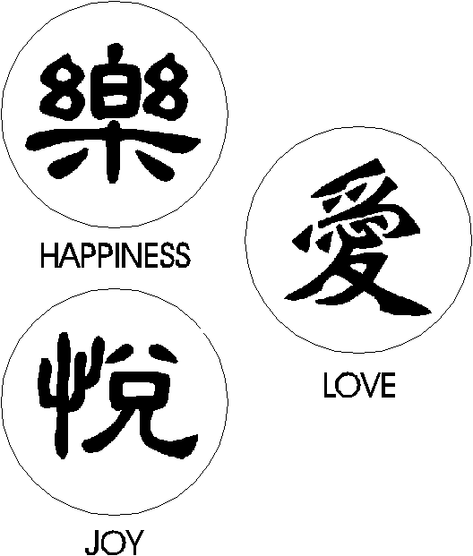

Decipherment
Day 5: Linguistics & Writing
Last Time
Review
With your neighbor, discuss, how did we define:
- Writing
- Language
- Pictographs
- de Saussure: Signifier vs. Signified
- Signs: Icon, Index, Symbol
Plan for Today
- How Well Does Writing Represent Language?
- Linguistic Concepts:
- Morphemes
- IPA / Phonetic features
- Phoneme
- Allophone
How Well Does Writing Convey Language?
- Last time we established that a writing system must represent language
- But is writing a perfect representation of language?
Language & Writing
- We know that writing cannot (or it’s difficult to) convey:
- body language (refer to general actions)
- tone (~ emotion)
Language & Writing
- Many writing systems do a relatively good job at conveying language
- Good = consistent, reliable, predictable
- one sign = one linguistic unit (word, sound, etc.)
Chinese

Finnish

English?
- There are definitely one-to-one correspondences in English:
- b = /b/; boy, maybe, rob
- n = /n/; new, whiner, in
- w = /w/; war, Ewok, now
English?
- But the English orthography is far from a true alphabet, where one letter = one sound…
- b: debt!
- n: damn!
- w: wrestle!
two letters = one sound
- Shoot – sh = one sound [ʃ]; not s + h
- Physics – ph = one sound [f] as fix
- Rough – gh = one sound [f], as in roof
two letters = one sound
- Character – ch = one sound [k] as in kick
- Church – ch = one sound [ʧ]; not c + h
two letters = one sound
- Thomas – th = one sound [t] as in Tom
- Either – th = one sound [θ]; not t + h
- Ether – th = one sound [ð]; not t + h
letters = no sound…
- autumn
- pneumonia
- psychodelic
- clothes
- knight
Same spelling = Different sounds…
- If one letter = one sound, what about -ough?
- Cough, tough, bough, through, though, thoroughfare
Different spellings = Same sound
See, senile, sea, seize, scenic, siege, ceiling, cedar, juicy, glossy, sexy
All of these spellings convey the sound combination [si]
What letters represent [si] in these words?
Different spellings = Same sound
This is why linguists often use the IPA (International Phonetics Alphabet) when describing speech sounds.
/kæn ju rid ðɪs sɛntəns ɪn ði aɪ pi eɪ/
Types of Writing Systems
Recall there are two types of writing systems
- Phonographic
- Logographic
Language <–> Writing
- Phonographic - connected to sound
- phonetics & phonology
- Logographic - connected to meaning
- morphology
Morphology & Morphemes
- The most relevant area for logographs is morphology
- Morphology is concerned with words and word formation
- Unit of morphology = morpheme
- a morpheme = a word chunk
- Smallest unit of language that carries meaning
Morphology & Morphemes

cat
Morphology & Morphemes

cats
Morphemes
- How many morphemes are in the following words?
- blackboard
- writing system
- teachers
Morphemes
How many morphemes are in the following words?
- language
- desks
- unbelievable
- reactivate
Why Should We Care About Morphemes?
- All words consist of morphemes
- Morphemes, especially common ones like suffixes, tend to be more frequent than others
- This type of frequency can lead to decipherment
Phonetics
- If we’re dealing with a phonographic system, then we should be thinking about sounds
- For this we need to recognize two separate, but closely connected, parts of language:
- phonetics
- phonology
Phonetics
- how sounds are made in the vocal tract (mouth, nose, throat)
- how they are perceived, and
- the physical properties of these sounds
Phonetics: Chart
- For example, what are the properties of the English speech sound [p]?

IPA chart
Phonetics: Chart
- How about [b]?
IPA chart
Phonetics: Chart
- How about [ɹ] (“r”) and [l]?
IPA chart
Distinctive Features
Identify the distinctive features of the following sounds:
(1) [m]; (2) [ʃ]; (3) [j]; (4) [ʔ]
IPA chart
Why Should We Care About Phonetics?
- Speakers aren’t usually aware of all the nitty gritty details of their sound system
- Which means that these things don’t often show up in the system’s organization or structure
But: Devanagari

Devanagari (Pali)
Korean

Korean Hangul
Phonology
The phonology of a particular language governs which sounds are contrastive
Which sounds are used to words that sound different from other words in the language
A contrastive sound in a language is called a phoneme
Phonetics vs. Phonetics
- Phonology = what speakers think they’re doing
- Phonetics = what they’re actually doing
Phonology
- The phonology of a particular language governs which sounds are contrastive (phonemes)
Contrastive?
- Let’s begin with the Eng. sounds “r” and “l”
- [ɹ] (“r”)
- [l] (“l”)
Contrastive?
- Do [ɹ] and [l] contrast in English?
- “rice” [ɹajs] vs. “lice” [lajs]
- “sear” [siɹ] vs. “seal” [sil]
- “crick” [kɹɪk] vs. “click” [klɪk]
Now let’s take a look at Korean…
| Form | Gloss | Form | Gloss |
|---|---|---|---|
| [rubi] | ‘ruby’ | [mul] | ‘water’ |
| [kiri] | ‘road’ | [pal] | ‘arm’ |
| [saram] | ‘person’ | [səul] | ‘Seoul’ |
| [irumi] | ‘name’ | [ilgop] | ‘seven’ |
| [ratio] | ‘radio’ | [ibalsa] | ‘barber’ |
Do [r] and [l] contrast in Korean?
Non-Contrastive Sounds
- When two or more sounds are not contrastive…
- Which means you can’t replace one for the other to make a new word!
- They are allophones of the same phoneme
Non-Contrastive Sounds
- In Korean [r] and [l] are allophones of the same phoneme.
| Form | Gloss | Form | Gloss |
|---|---|---|---|
| [rubi] | ‘ruby’ | [mul] | ‘water’ |
| [kiri] | ‘road’ | [pal] | ‘arm’ |
| [saram] | ‘person’ | [səul] | ‘Seoul’ |
| [irumi] | ‘name’ | [ilgop] | ‘seven’ |
| [ratio] | ‘radio’ | [ibalsa] | ‘barber’ |
Allophones in English
| pit | spit |
Allophones in English
| like | kyle |
Allophones in English
Listen to or silently pronounce the following pairs, then answer the following questions.
- “a”: cat / Andrew
- “k”: king / Kong
- “t”: trust / tweet
Are the letters representing the same sound in each pair?
If not, what might explain why they don’t sound the same to you?
Why Should We Care About Phonemes?
If it’s a phonographic system, at some level, phonemes are written!
Linguistics & Writing
How does all of this relate to writing systems?
- In devising a writing system one must choose between representing meaning (logographs) or representing sound (phonographs):
A purely Phonographic script
- Runic Alphabet
- Earliest: Denmark and Germany, dating to 1st c. ce
- Based off of the Roman alphabet, written from L to R
- Consists of 24 runes

Elder Futhark
Read the following sentence in Runes

ᚺᛖᚱ ᛁᛋ ᚹᚨᚱᛞᚨᛉ ᚱᚢᚾᛟ
‘Here is a protected rune’
Logographic Script: Chinese
Chinese logograms
Are there any logographic signs in English?
Yes, plenty!
Arabic Numerals: 1, 2, 3, 4, 5, etc.
Mathematical symbols: + , - , = , × , etc.
Other common symbols: &, %, $, €, #, etc.
Any “Purely” Logographic scripts?
- Nope! No “pure” logographic scripts, as each logographic system has at least some phonological signs
Any “Purely” Logographic scripts?
- Why not?
- In order for a writing system to adequately represent a language, it must be able to represent words that are newly introduced in the language, such as names, foreign words, etc.
All Logographics Got a Little Phono in Them
All Logographics Got a Little Phono in Them
Bèilākè Àobāmǎ 贝拉克·奥巴马
Tángnàdé Tèlǎngpǔ 唐纳德·特朗普
A Valiant Effort: Zlango
- A while back, an Israeli company tried to make a purely logographic writing system
- It encodes NO phonological information whatsoever
- hypothetically, this makes the platform viable for cross-language communication
A Valiant Effort: Zlango
From the website:
“Zlango’s telco-grade SMS-like service enables users to easily incorporate expressive icons into their mobile messages without changing messaging habits, language or slang.”